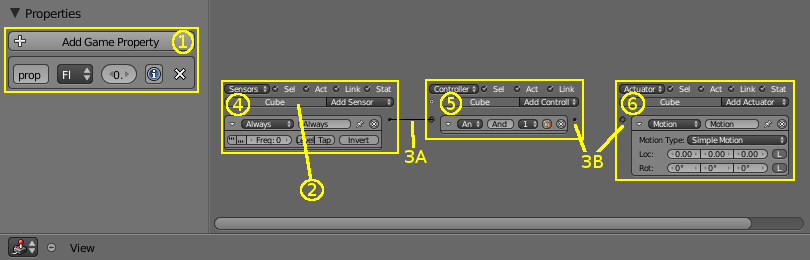

逻辑编辑器¶
逻辑编辑器提供了为构成游戏的各种角色（即物体）设置和编辑游戏逻辑的主要方法。在相关3D视图中当前选择的物体的逻辑显示为逻辑块，分别显示为具有三列的表，分别显示促动器，控制器和触发器。连接逻辑块的链接传导传感器控制器和控制器执行器之间的脉冲。
为了更好地了解逻辑编辑器，下图显示了主要组件标记的典型编辑器内容。我们将分别来看每一个。

逻辑编辑器的不同部分。
1）属性区域，2）物体名称，3a）连接线，3b）连接槽，4）促进器列，5）控制器列，6）触发器列。
Main View¶
- 物体名称
- 该框显示了拥有以下逻辑块的物体的名称。
- 连接线
连接线（3A）表示物体之间逻辑流的方向。通过
LMB从一个连接槽（3B）拖动到另一个连接槽座来绘制连接线。连接线只能从促进器到控制器，或从控制器到触发器。您不能将促进器直接连接到触发器; 同样，执行器不能与促进器连接（但是，特殊促进的执行器和促进器可用于提供这些连接线）。发送节点（促进器和控制器右侧的黑圈）可以发送到多个接收节点（控制器和触发器左侧的白色圆圈）。接收节点同样可以接收多个连接。
可以在属于不同物体的逻辑块之间创建连接先。要删除两个节点
LMB之间的连接线，请在两个节点之间拖动。